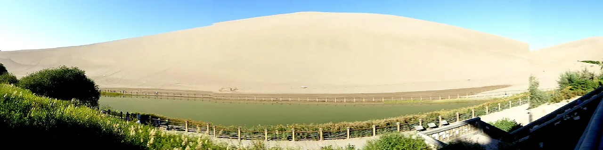
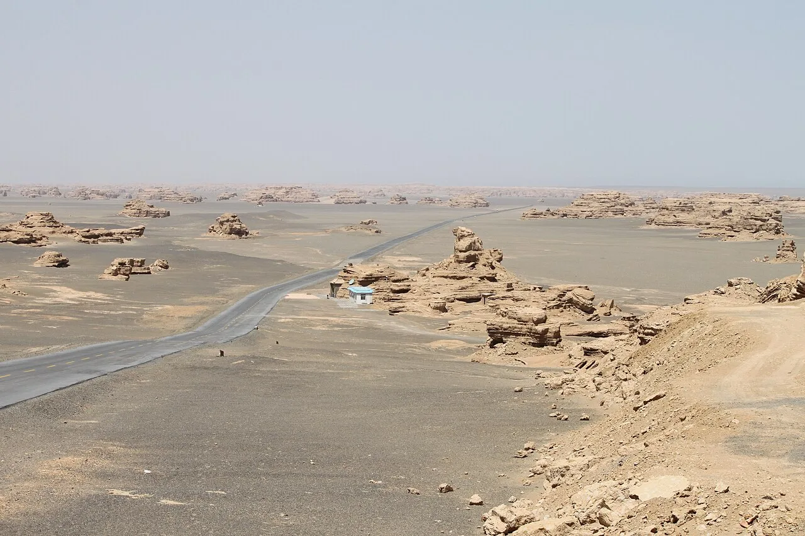
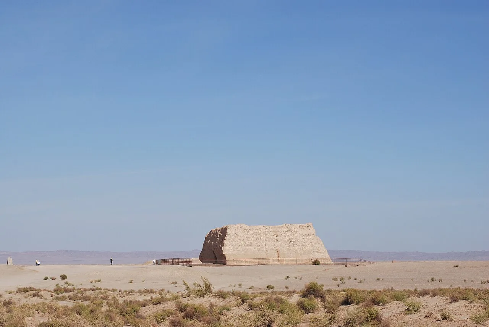
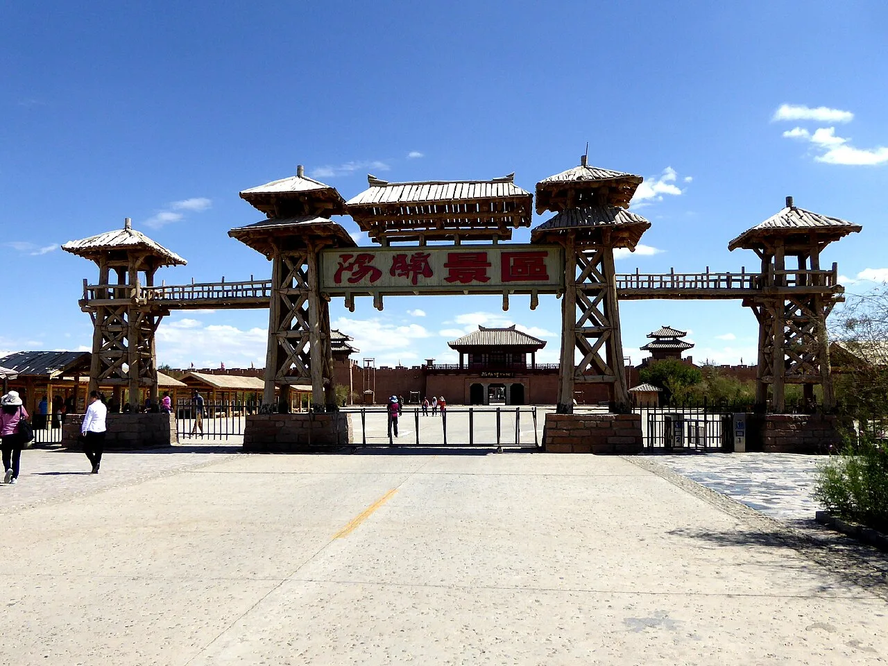
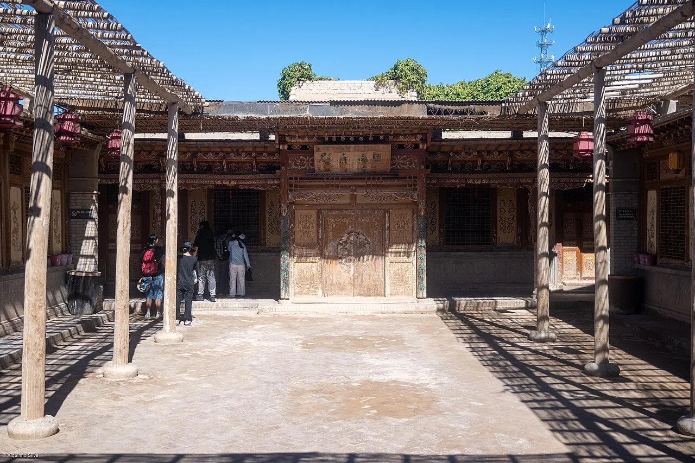

🏔️ Top Attractions
敦煌最值得去的地方

莫高窟
莫高窟是崖壁上的千年佛国,彩塑壁画在幽暗洞窟里仍鲜亮,飞天衣带当风。它是丝路最厚重的艺术心脏。建议预留3-4小时慢慢逛。...
🎫 238元
⏱️ 建议3-4小时
鸣沙山月牙泉
鸣沙山环抱一弯不枯的月牙泉,沙鸣泉静相生千年。爬上沙脊看日落,再滑沙而下,是敦煌最浪漫的仪式。建议预留半天慢慢逛。...
🎫 110元
⏱️ 建议半天

雅丹地质公园
雅丹地质公园是风蚀出的"魔鬼城",土丘如舰阵列于戈壁,日落时金红诡谲。它是西部最像异星的地貌。建议预留2-3小时慢慢逛。...
🎫 120元
⏱️ 建议2-3小时

玉门关
玉门关是汉长城的西陲关隘,"春风不度"的诗句让它千古有名。残垣立于戈壁,仍守着丝路的苍凉。建议预留1小时慢慢逛。...
🎫 40元
⏱️ 建议1小时

阳关
阳关是"西出阳关无故人"的故地,烽燧孤立于沙碛,凭吊感扑面。它是送别诗里最具体的那座关。建议预留1-2小时慢慢逛。...
🎫 50元
⏱️ 建议1-2小时

敦煌博物馆
敦煌博物馆把丝路文书、魏晋墓画与石窟复制品汇于一处,是看莫高窟前的预习室。它让千年变得可触。建议预留2小时慢慢逛。...
🎫 免费
⏱️ 建议2小时